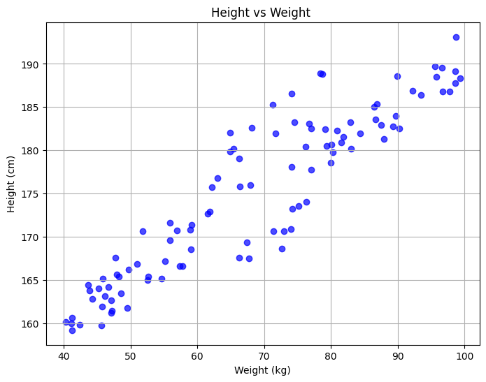
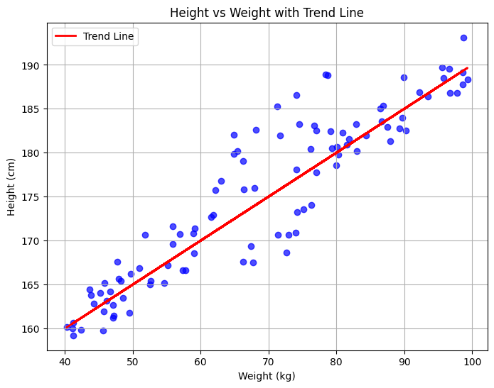
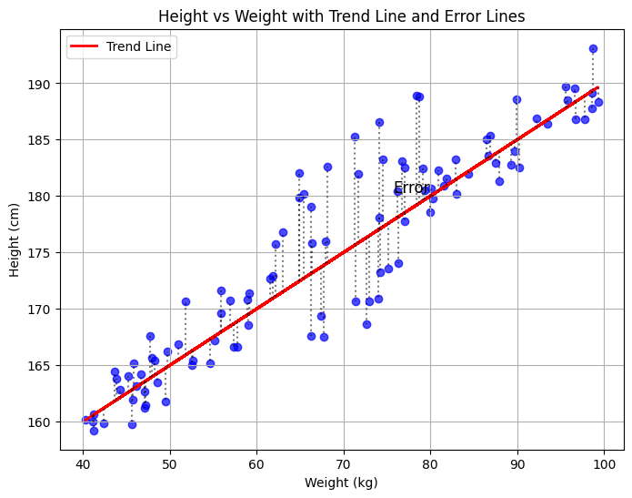

In the first introduction, we discussed how AI systems can 'learn' and adapt. In this section, let's define such systems using a fundamental example. I refer to this example as primitive because, while it is straightforward, it has been developed over two hundred years ago and formalized separately by Laplace and Gauss, although its underlying concepts date back even further.
This predictive analysis method, more commonly known as the 'best fit line', is called Linear Regression.
Let's consider a set of samples representing body height and weight. We can plot these on a graph as shown below:
Note that the relationship appears linear, as we have adjusted the data for our study. Given this dataset, if we were to obtain new samples of height and weight, we could easily 'guesstimate' the approximate weight or height by referring to the graph.
However, this tedious technique has limitations when dealing with large datasets or when the data's complexity makes it difficult for the human eye to discern clear patterns. This is where a formal mathematical approach to prediction becomes invaluable.
Linear regression aims to find a line (simply finding the parameters m and c in the equation y = mx + c) that minimizes the error between the line and the actual data points. This method allows for more accurate predictions based on the available data.
If you would like to learn how exactly we can find this line and actually perform Linear regression on your own from scratch, kindly have a look at Resource Page for Links to start For now let's consider a high-level overview of Linear Regression, considering it as a blackbox and proceeding to understand what it does.
Have a look at the following image, where the best fit line has been added to our original data:
